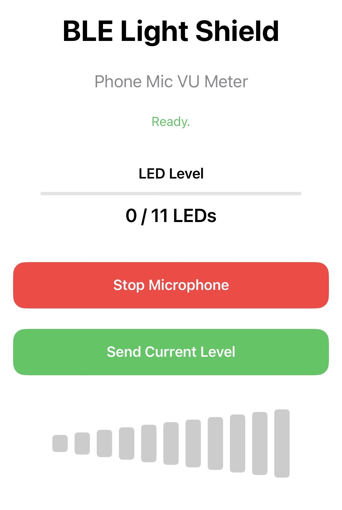
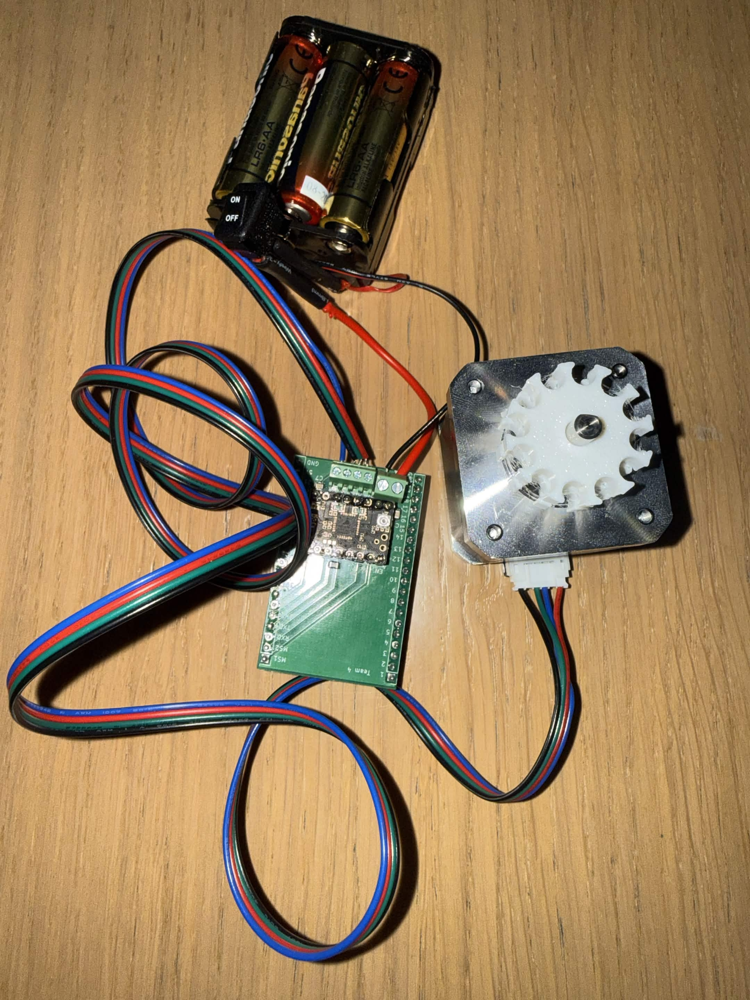

10 / Tutorials
How we set it up.
Step by step walkthroughs from each team member covering different aspects of the project.
Tutorial 01
Building a BLE Phone App
A step by step tutorial created for a different project that uses the same core idea as AutoBlinds. A Swift iPhone app communicating with an ESP32 over Bluetooth to control physical hardware.
- 1Set up an ESP32 as a BLE peripheral and test it with nRF Connect.
- 2Build a Swift app in Xcode that scans, connects, and sends data to the ESP32.
- 3Apply the same BLE structure to AutoBlinds where the phone sends a command, ESP32 drives the motor.

Tutorial 02
Controlling a Stepper Motor with the TMC2209
This tutorial explains how to wire an ESP32 to a TMC2209 stepper motor driver and control a NEMA 17 motor using microstepping for smoother AutoBlinds movement.
- 1 Wire the ESP32, TMC2209 driver, and NEMA 17 stepper motor.
- 2 Set the microstepping mode using the MS1 and MS2 pins.
- 3 Upload firmware that sends STEP and DIR pulses to spin the motor.

Tutorial 03
Your title here
[ Teammate — add your description here ]
- 1Step one
- 2Step two
- 3Step three
Add image here